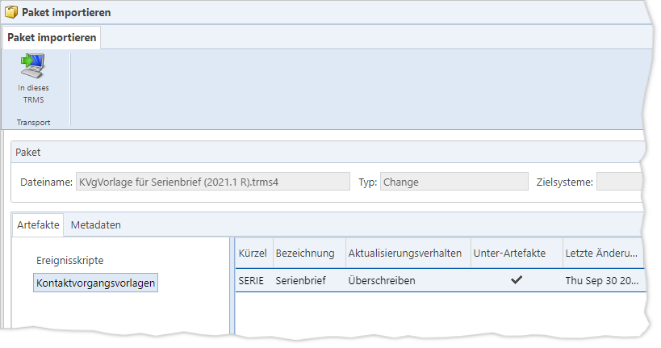

Alternativ zum direkten Transport von Changes/Changes Set aus
einem TRMS in ein anderes können Sie auch lokale trms4-Paketdateien hochladen
und in ein TRMS importieren oder in ein anderes TRMS transportieren. Genauso wie
beim direkten Transport werden die Changes/Change Sets aus dem Paket im
jeweiligen Ziel-TRMS schreibgeschützt
angelegt [Link].
Dazu klicken Sie im Menüpunkt „Pakete“ auf die Schaltfläche
„In anderes
TRMS“ bzw. „In dieses TRMS“.
Falls bereits Changes/Change Sets mit denselben Namen im
TRMS-Zielsystem vorhanden sind, wird an die Namen der importierten eine laufende
Nummer in Klammern angehängt (z. B. „Test-Change-Set“ wird zu „Test-Change-Set
(1)“.
Paketanforderungen
Nur Pakete aus Changes oder Change Sets können auf diese
Weise in ein TRMS importiert werden. Pakete, die im Menüpunkt „Pakete“
zusammengestellt wurden, können also nicht importiert
werden; sie erhalten in diesem Fall folgende Fehlermeldung:
Nur Pakete, die aus Change und
Change Set erstellt wurden, können in ein TRMS importiert werden.
Dialog für den Paketimport in ein
TRMS

Abb. 28: Dialog mit Übersicht des Paketinhalts
Nach dem Auswählen und Hochladen der trms4-Paketdatei
erscheint ein Dialog, in dem der Inhalt des Pakets dargestellt wird. Die
Darstellung ist rein informativ – es ist nicht möglich, Artefakte oder deren
Einstellungen zu ändern, zu ergänzen oder zu entfernen.
Klicken Sie im Dialog auf die Schaltfläche „In dieses TRMS“ bzw.
„In anderes
TRMS“ (abhängig davon, mit welcher Schaltfläche das Hochladen
des trms4-Pakets eingeleitet wurde), um das Transportieren des Pakets zu
starten.
Da auf diese Weise angelegte Changes und Change Sets als
schreibgeschützt
markiert sind, sind die Be- und Verarbeitungsmöglichkeiten nach dem Transport
eingeschränkt.
Schaltfläche
|
Symbol |
Schaltfläche |
Beschreibung |
|

|
„In anderes
TRMS“
[Strg] + [Alt] + [i] |
Öffnet zunächst einen Dialog zur Auswahl der
Zielsysteme und startet anschließend die Übertragung der Artefakte die
Ziel-TRMS-Systeme (wo sie als schreibgeschützte
Changes/Change Sets angelegt werden [Link]). |
|
„In dieses
TRMS“
[Alt] + [U] |
Öffnet einen Dateiauswahldialog, um eine
trms4-Paketdatei auszuwählen und den im Paket enthaltenen Change/das
Change Set in einer schreibgeschützten
Fassung im aktuellen TRMS anzulegen [Link].
Nach erfolgtem Import wechselt das TRMS, je nach Inhalt
des importierten Pakets, zum Menüpunkt „Changes“ bzw. „Change Sets“ und
öffnet den entsprechenden Dialog.
Das Ergebnis ist dasselbe wie beim Transport aus einem
anderen TRMS in das aktuelle TRMS. |